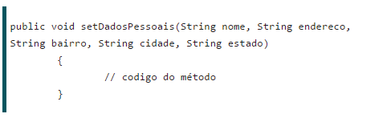
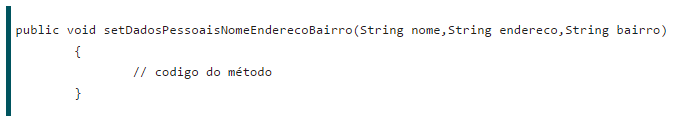

INTRODUÇÃO
Sobrecarga
O java nos permite trabalhar tanto com métodos sobrecarregados como com tipos genéricos, vamos ver qual a utilidade de ambos sempre mostrando primeiro o problema para depois apontar a solução. Será mostrado a utilização dos métodos sobrecarregados e dos tipos genéricos na resolução do seu respectivo problema.Ao desenvolver uma aplicação surge a necessidade de se criar um método que receba por parâmetros o nome do cliente, endereco, bairro, cidade e estado.
Vamos ao problema: Ao desenvolver uma aplicação surge a necessidade de se criar um método que receba por parâmetros o nome do cliente, endereco, bairro, cidade e estado. Então foi criado o método como abaixo:

Ao longo do projeto é percebido que nem sempre será necessário a inclusão do endereco, do bairro, da cidade e do estado. Então é solicitado ao programador que fosse feito um método que recebesse apenas o nome e o sobrenome do cliente. Então foi criado o método:

Agora o sistema está aceitando a inserção de todos os dados pessoais, mas também aceita apenas o nome e o sobreNome do cliente. Pouco depois surgiu a necessidade de um método que recebesse apenas o nome, o endereço e o bairro. Então foi criado o método:

A medida que as solicitações aconteciam os métodos iriam crescendo e além de crescendo os nomes estavam ficando cada vez maiores. Para cada situação diferente um novo método e um nome diferente.